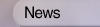
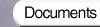

| Documents | | | openssl(1) | | | ssl(3) | | | crypto(3) | | | HOWTO | | | FIPS140 | | | misc |
 |
 |
s_server(1)
NAME
s_server - SSL/TLS server program
SYNOPSIS
openssl s_server [-accept port] [-naccept count] [-context id] [-verify depth] [-Verify depth] [-crl_check] [-crl_check_all] [-cert filename] [-certform DER|PEM] [-key keyfile] [-keyform DER|PEM] [-pass arg] [-dcert filename] [-dcertform DER|PEM] [-dkey keyfile] [-dkeyform DER|PEM] [-dpass arg] [-dhparam filename] [-nbio] [-nbio_test] [-crlf] [-debug] [-msg] [-state] [-CApath directory] [-CAfile filename] [-nocert] [-cipher cipherlist] [-quiet] [-no_tmp_rsa] [-ssl2] [-ssl3] [-tls1] [-no_ssl2] [-no_ssl3] [-no_tls1] [-no_dhe] [-bugs] [-brief] [-hack] [-www] [-WWW] [-HTTP] [-engine id] [-tlsextdebug] [-no_ticket] [-id_prefix arg] [-rand file(s)]
DESCRIPTION
The s_server command implements a generic SSL/TLS server which listens for connections on a given port using SSL/TLS.
OPTIONS
In addition to the options below the s_server utility also supports the common and server only options documented in the SSL_CONF_cmd(3) manual page.
- -accept port
-
the TCP port to listen on for connections. If not specified 4433 is used.
- -naccept count
-
The server will exit after receiving number connections, default unlimited.
- -context id
-
sets the SSL context id. It can be given any string value. If this option is not present a default value will be used.
- -cert certname
-
The certificate to use, most servers cipher suites require the use of a certificate and some require a certificate with a certain public key type: for example the DSS cipher suites require a certificate containing a DSS (DSA) key. If not specified then the filename ``server.pem'' will be used.
- -certform format
-
The certificate format to use: DER or PEM. PEM is the default.
- -key keyfile
-
The private key to use. If not specified then the certificate file will be used.
- -keyform format
-
The private format to use: DER or PEM. PEM is the default.
- -pass arg
-
the private key password source. For more information about the format of arg see the PASS PHRASE ARGUMENTS section in openssl(1).
- -dcert filename, -dkey keyname
-
specify an additional certificate and private key, these behave in the same manner as the -cert and -key options except there is no default if they are not specified (no additional certificate and key is used). As noted above some cipher suites require a certificate containing a key of a certain type. Some cipher suites need a certificate carrying an RSA key and some a DSS (DSA) key. By using RSA and DSS certificates and keys a server can support clients which only support RSA or DSS cipher suites by using an appropriate certificate.
- -dcertform format, -dkeyform format, -dpass arg
-
addtional certificate and private key format and passphrase respectively.
- -nocert
-
if this option is set then no certificate is used. This restricts the cipher suites available to the anonymous ones (currently just anonymous DH).
- -dhparam filename
-
the DH parameter file to use. The ephemeral DH cipher suites generate keys using a set of DH parameters. If not specified then an attempt is made to load the parameters from the server certificate file. If this fails then a static set of parameters hard coded into the s_server program will be used.
- -no_dhe
-
if this option is set then no DH parameters will be loaded effectively disabling the ephemeral DH cipher suites.
- -no_tmp_rsa
-
certain export cipher suites sometimes use a temporary RSA key, this option disables temporary RSA key generation.
- -verify depth, -Verify depth
-
The verify depth to use. This specifies the maximum length of the client certificate chain and makes the server request a certificate from the client. With the -verify option a certificate is requested but the client does not have to send one, with the -Verify option the client must supply a certificate or an error occurs.
- -crl_check, -crl_check_all
-
Check the peer certificate has not been revoked by its CA. The
CRL(s)are appended to the certificate file. With the -crl_check_all option all CRLs of all CAs in the chain are checked. - -CApath directory
-
The directory to use for client certificate verification. This directory must be in ``hash format'', see verify for more information. These are also used when building the server certificate chain.
- -CAfile file
-
A file containing trusted certificates to use during client authentication and to use when attempting to build the server certificate chain. The list is also used in the list of acceptable client CAs passed to the client when a certificate is requested.
- -state
-
prints out the SSL session states.
- -debug
-
print extensive debugging information including a hex dump of all traffic.
- -msg
-
show all protocol messages with hex dump.
- -trace
-
show verbose trace output of protocol messages. OpenSSL needs to be compiled with enable-ssl-trace for this option to work.
- -msgfile
-
file to send output of -msg or -trace to, default standard output.
- -nbio_test
-
tests non blocking I/O
- -nbio
-
turns on non blocking I/O
- -crlf
-
this option translated a line feed from the terminal into CR+LF.
- -quiet
-
inhibit printing of session and certificate information.
- -psk_hint hint
-
Use the PSK identity hint hint when using a PSK cipher suite.
- -psk key
-
Use the PSK key key when using a PSK cipher suite. The key is given as a hexadecimal number without leading 0x, for example -psk 1a2b3c4d.
- -ssl2, -ssl3, -tls1, -no_ssl2, -no_ssl3, -no_tls1
-
these options disable the use of certain SSL or TLS protocols. By default the initial handshake uses a method which should be compatible with all servers and permit them to use SSL v3, SSL v2 or TLS as appropriate.
- -bugs
-
there are several known bug in SSL and TLS implementations. Adding this option enables various workarounds.
- -brief
-
only provide a brief summary of connection parameters instead of the normal verbose output.
- -hack
-
this option enables a further workaround for some some early Netscape SSL code (?).
- -cipher cipherlist
-
this allows the cipher list used by the server to be modified. When the client sends a list of supported ciphers the first client cipher also included in the server list is used. Because the client specifies the preference order, the order of the server cipherlist irrelevant. See the ciphers command for more information.
- -tlsextdebug
-
print out a hex dump of any TLS extensions received from the server.
- -no_ticket
-
disable RFC4507bis session ticket support.
- -www
-
sends a status message back to the client when it connects. This includes lots of information about the ciphers used and various session parameters. The output is in HTML format so this option will normally be used with a web browser.
- -WWW
-
emulates a simple web server. Pages will be resolved relative to the current directory, for example if the URL https://myhost/page.html is requested the file ./page.html will be loaded.
- -HTTP
-
emulates a simple web server. Pages will be resolved relative to the current directory, for example if the URL https://myhost/page.html is requested the file ./page.html will be loaded. The files loaded are assumed to contain a complete and correct HTTP response (lines that are part of the HTTP response line and headers must end with CRLF).
- -rev
-
simple test server which just reverses the text received from the client and sends it back to the server. Also sets -brief.
- -engine id
-
specifying an engine (by its unique id string) will cause s_server to attempt to obtain a functional reference to the specified engine, thus initialising it if needed. The engine will then be set as the default for all available algorithms.
- -id_prefix arg
-
generate SSL/TLS session IDs prefixed by arg. This is mostly useful for testing any SSL/TLS code (eg. proxies) that wish to deal with multiple servers, when each of which might be generating a unique range of session IDs (eg. with a certain prefix).
- -rand file(s)
-
a file or files containing random data used to seed the random number generator, or an EGD socket (see RAND_egd(3)). Multiple files can be specified separated by a OS-dependent character. The separator is ; for MS-Windows, , for OpenVMS, and : for all others.
CONNECTED COMMANDS
If a connection request is established with an SSL client and neither the -www nor the -WWW option has been used then normally any data received from the client is displayed and any key presses will be sent to the client.
Certain single letter commands are also recognized which perform special operations: these are listed below.
- q
-
end the current SSL connection but still accept new connections.
- Q
-
end the current SSL connection and exit.
- r
-
renegotiate the SSL session.
- R
-
renegotiate the SSL session and request a client certificate.
- P
-
send some plain text down the underlying TCP connection: this should cause the client to disconnect due to a protocol violation.
- S
-
print out some session cache status information.
NOTES
s_server can be used to debug SSL clients. To accept connections from a web browser the command:
openssl s_server -accept 443 -www
can be used for example.
Most web browsers (in particular Netscape and MSIE) only support RSA cipher suites, so they cannot connect to servers which don't use a certificate carrying an RSA key or a version of OpenSSL with RSA disabled.
Although specifying an empty list of CAs when requesting a client certificate is strictly speaking a protocol violation, some SSL clients interpret this to mean any CA is acceptable. This is useful for debugging purposes.
The session parameters can printed out using the sess_id program.
BUGS
Because this program has a lot of options and also because some of the techniques used are rather old, the C source of s_server is rather hard to read and not a model of how things should be done. A typical SSL server program would be much simpler.
The output of common ciphers is wrong: it just gives the list of ciphers that OpenSSL recognizes and the client supports.
There should be a way for the s_server program to print out details of any unknown cipher suites a client says it supports.